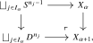
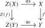
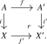
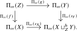
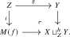
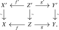
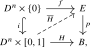
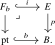
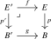
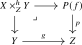

Having established a general toolkit for understanding limits and colimits in localizations, we return our attention to the localization functor \(\Pi _{\infty }\colon \Top \to \An \). In order to apply the theorems from the previous section, we need to equip \(\Top \) with suitable notions of fibrations and cofibrations. The standard choice, originating from Quillen’s work [Quillen (1967)], uses Serre fibrations and relative cell complexes. We will recall the relevant definitions and statements.
2.3.1 Relative cell complexes
We start with the cofibrations.
Definition 2.3.1. A continuous map \(i\colon A \to X\) is called a relative cell complex if it is isomorphic under \(A\) to a map obtained by iteratively attaching cells: there exists an ordinal \(\lambda \), a sequence \((X_{\alpha })_{\alpha \leq \lambda }\) and a homeomorphism \(X_{\lambda } \cong X\) under \(A\) such that
- \(X_0 = A\);
- For \(\alpha < \lambda \), \(X_{\alpha +1}\) is formed from \(X_{\alpha }\) via a pushout square for some index set \(I_\alpha \) and dimensions \(n_j \geq 0\).

- For limit ordinals \(\beta \leq \lambda \), \(X_{\beta } = \colim _{\alpha < \beta } X_{\alpha }\).
A topological space \(X\) is a cell complex if the map \(\emptyset \to X\) is a relative cell complex. We denote by \(\mathrm {Cell} \subseteq \Top \) the full subcategory spanned by the cell complexes.
Remark 2.3.2. While the definition involves ordinals to handle potentially transfinite constructions, for many common examples the process involves only a finite or countable number of steps. For example, every cell complex is homotopy equivalent to a CW-complex, which is a cell complex where \(\lambda = \omega \) is the set of natural numbers, and where the dimensions of the cells attached at step \(n \in \omega \) is \(n\).
Cell complexes play an important role in homotopy theory, due to the following two important theorems:
Theorem 2.3.3 (Whitehead’s theorem, [Hatcher (2002), Theorem 4.5]). Let \(f\colon X \to Y\) be a weak homotopy equivalence between spaces having the homotopy type of cell complexes. Then \(f\) is a homotopy equivalence.
Proof. Choose homotopy equivalences \(u\colon X' \to X\) and \(v\colon Y' \to Y\) with \(X'\) and \(Y'\) cell complexes, and let \(w\colon Y \to Y'\) be a homotopy inverse to \(v\). The composite \(wfu\colon X' \to Y'\) is a weak homotopy equivalence, hence a homotopy equivalence by the usual Whitehead theorem. Since \(u\) and \(w\) are homotopy equivalences, so is \(f\). □
Theorem 2.3.4 (CW-approximation, [Hirschhorn (2015), Theorem 2.1]). For every topological space \(X\), there exists a cell complex \(Z\) equipped with a weak homotopy equivalence \(q\colon Z \iso X\). Moreover, \(Z\) and \(q\) can be taken to be functorial in \(X\).
Remark 2.3.5. An explicit construction of such a functorial CW-approximation may be given as follows. Recall from Definition 1.6.9 that the singular complex functor \(\Sing \colon \Top \to \sSet \) admits the geometric realization functor \(\abs {-}\colon \sSet \to \Top \) as a left adjoint. One can prove that the geometric realization \(\abs {K}\) is a CW-complex for every simplicial set \(K\). Furthermore, for any topological space \(X\) the counit \(\abs {\Sing (X)} \to X\) of the adjunction is a weak homotopy equivalence.
As a consequence of these two theorems, animae are cell complexes up to homotopy equivalence:
Proposition 2.3.6. The functor \(\Pi _{\infty }\colon \Cell \to \An \) induces an equivalence \[ \Cell [\{\textup {homotopy equivalences}\}^{-1}] \; \iso \; \An . \]
Proof. In light of the homotopy hypothesis, Axiom M, it suffices to show that the functor \[ \Cell [\{\text {homotopy equivalences}\}^{-1}] \to \Top [\{\text {weak homotopy equivalences}\}^{-1}] \] induced by the inclusion is an equivalence of \(\infty \)-categories. By Theorem 2.3.4 there exists a functor \(Z\colon \Top \to \Cell \) equipped with a natural transformation \(q\colon Z \Rightarrow \id _{\Top }\) such that the map \(q_X\colon Z(X) \to X\) is a weak homotopy equivalence for all \(X\). Given a weak homotopy equivalence \(f\colon X \to Y\), the 2-out-of-3 property applied to the diagram

shows that the map \(Z(f)\) is again a weak homotopy equivalence, and by Whitehead’s theorem it is in fact a homotopy equivalence. It follows that \(Z\) induces a functor \(\Top [\{\text {weak homotopy equivalences}\}^{-1}] \to \Cell [\{\text {homotopy equivalences}\}^{-1}]\), and the natural transformation \(q\colon Z \to \id \) exhibits this as the requisite inverse functor. □
Corollary 2.3.7. The homotopy category \(\Ho (\An )\) is equivalent to the category \(\h \Cell \) whose objects are the cell complexes and whose morphism set between \(X\) and \(Y\) is the set \([X,Y]\) of homotopy classes of continuous maps \(X \to Y\).
Proof. It suffices to observe that a functor \(F\colon \Cell \to C\) into a 1-category inverts homotopy equivalences if and only if it identifies homotopic maps. One implication follows by applying \(F\) to homotopy inverses. Conversely, if \(H\colon f \sim g\) is a homotopy, then \[ F(f)=F(H)F(i_0)=F(H)F(\pr )^{-1}=F(H)F(i_1)=F(g), \] where \(i_0,i_1\colon X \to X\times [0,1]\) are the endpoint inclusions and \(\pr \colon X\times [0,1]\to X\) is the projection. Thus \(\h \Cell \) has the same universal property as the homotopy category of the localization in Proposition 2.3.6. □
We are now ready to establish the claimed structure on \(\Top \):
Theorem 2.3.8 (cf. Hovey (1999), Theorem 2.4.19). Let \(W_{\text {whe}}\) be the collection of weak homotopy equivalences in \(\Top \), and let \(I_{\text {cell}}\) be the collection of relative cell complexes. Then \((\Top , W_{\text {whe}}, I_{\text {cell}})\) is an \(\infty \)-category with weak equivalences and cofibrations. Furthermore, it admits functorial factorizations and is homotopy cocomplete.
Proof sketch. We need to verify the axioms from Definition 2.2.4 (dualized for cofibrations):
- (1)
-
(2-out-of-3): It is clear from the definition that the class \(W_{\text {whe}}\) satisfies the 2-out-of-3 property.
- (2)
-
(Class of cofibrations): The class \(I_{\text {cell}}\) contains all isomorphisms (by attaching no cells) and is closed under composition (attaching cells iteratively). It is also closed under pushouts: if \(i\colon A \to X\) is a relative cell complex and \(f\colon A \to A'\) is any map, consider the pushout square

Then \(i'\) is also a relative cell complex, where the filtration is inductively defined by \(X'_{\lambda +1} := X_{\lambda +1} \sqcup _{X_{\lambda }} X'_{\lambda }\).
- (3)
-
(Pushout axiom): We need to show that if \(i\colon A \to X\) is a trivial cofibration (i.e., a relative cell complex and a weak homotopy equivalence) between cofibrant objects (cell complexes), then the pushout \(i'\colon A' \to X'\) is also a weak homotopy equivalence. This is a non-trivial fact in model category theory. One first shows that every trivial cofibration has the left lifting property with respect to the Serre fibrations (see Definition 2.3.12 below), then observes that this property is preserved by pushouts, and finally deduces that every map with this lifting property is a weak homotopy equivalence. See Hovey (1999), Section 2.4.
- (4)
-
(Factorization axiom): The small object argument functorially factors every map \(f\colon X \to Y\) as \(X \xrightarrow {i} Z \xrightarrow {p} Y\), where \(i\) is a relative cell complex and \(p\) is a trivial Serre fibration, hence in particular a weak homotopy equivalence. See Hovey (1999), Sections 2.1 and 2.4.
Since all axioms are satisfied, \((\Top , W_{\text {whe}}, I_{\text {cell}})\) is an \(\infty \)-category with weak equivalences and cofibrations (with functorial factorizations). It is straightforward to see that a small coproduct of (trivial) cofibrations is again a (trivial) cofibration, so that \(\Top \) is in fact homotopy cocomplete. □
Proposition 2.3.9. The functor \(\Pi _{\infty }\colon \Top \to \An \) sends every pushout square in \(\Top \) whose vertices are cell complexes and one of whose maps is a relative cell complex to a pushout square in \(\An \).
Proof. This follows directly from Theorem 2.3.8 and the right exactness of localization functors stated in Corollary 2.2.9. □
We now arrive at the main result of this section.
Proposition 2.3.10. Let \(f\colon Z \to X\) and \(g\colon Z \to Y\) be continuous maps, where all three spaces have the homotopy type of a cell complex. The canonical homotopy \(H_{\can }\) from Definition 2.1.3 determines a commutative square of animae

and this square is a pushout.
Proof. Consider the mapping cylinder of the map \(f\): \[ M(f) \quad := \quad (X \sqcup (Z \times [0,1])) / (z,0) \sim f(z). \] The map \(f\) factors as \(Z \xrightarrow {i} M(f) \xrightarrow {p} X\), where \(i(z) := [(z,1)]\), where \(p\vert _X = \id _X\) and where \(p\vert _{Z \times [0,1]}(z,t) := f(z)\). Observe that the map \(p\colon M(f) \to X\) is a homotopy equivalence, with homotopy inverse sending \(x\) to \([x]\). In particular, it induces an equivalence \(\Pi _{\infty }(M(f)) \iso \Pi _{\infty }(X)\) of animae. Further observe that the homotopy pushout \(X \sqcup _Z^h Y\) can be identified with the strict pushout \(M(f) \sqcup _Z Y\) via the maps \(g\) and the projection \(M(f) \to X\):

We will show that the functor \(\Pi _{\infty }\colon \Top \to \An \) preserves this pushout square.
Case 1: Assume first that the spaces \(X\), \(Y\) and \(Z\) are cell complexes and that the map \(f\) is a relative cell complex. In this case, the map \(i\colon Z \to M(f)\) is also a relative cell complex: it may be written as the composite of \(Z \times \{1\} \hookrightarrow Z \times [0,1]\), which is a relative cell complex by the product cell filtration, and the map \(Z \times [0,1] \to M(f)\), which is a pushout of the map \(Z \to X\) and hence also a relative cell complex. The fact that \(\Pi _{\infty }(-)\) preserves the pushout square in Equation 2.1 is now an instance of Proposition 2.3.9.
Case 2: We will now prove the general case. By Theorem 2.3.4, there exists a cell complex \(Z'\) and a weak homotopy equivalence \(Z' \iso Z\). By factorizing the composite maps \(Z' \to X\) and \(Z' \to Y\) into a relative cell complex followed by a weak equivalence, we obtain a commutative diagram

where \(X'\), \(Y'\) and \(Z'\) are cell complexes, the vertical maps are weak homotopy equivalences, and \(f'\) and \(g'\) are relative cell complexes. Since all six spaces have the homotopy type of a cell complex, it follows from Whitehead’s theorem that the vertical maps are even homotopy equivalences. By homotopy invariance of homotopy pushouts, Exercise 2.1.4, the induced map \(X' \sqcup _{Z'}^h Y' \to X \sqcup _Z^h Y\) is again a homotopy equivalence, and in particular it becomes an equivalence after applying \(\Pi _{\infty }(-)\). This means that we have reduced the problem to Case 1, thus finishing the proof. □
We next record when an actual quotient computes a homotopy cofiber. Recall that a pair \((Y,A)\) consisting of a closed subspace \(A \subseteq Y\) is called a neighborhood deformation retract pair, or NDR-pair, if there are a continuous map \(u\colon Y \to [0,1]\) and a homotopy \(h\colon Y \times [0,1] \to Y\) such that \[ u^{-1}(0)=A,\qquad h(y,0)=y,\qquad h(a,t)=a, \] and \(h(y,1)\in A\) whenever \(u(y)<1\). An inclusion \(A\hookrightarrow Y\) is called collared if there is an open neighborhood \(U\) of \(A\) in \(Y\) and a homeomorphism \[ A\times [0,1) \xrightarrow {\cong } U \] whose restriction to \(A\times \{0\}\) is the given inclusion. Every collared inclusion is an NDR-pair. More generally, the NDR condition is equivalent to the homotopy extension property; see May (1999), Chapter 6, Section 4.
Corollary 2.3.11. Let \((Y,A)\) be an NDR-pair with \(A\) nonempty, and assume that \(A\) and \(Y\) have the homotopy type of cell complexes. Then the quotient map \(Y \to Y/A\) induces an isomorphism \[ \Pi _{\infty }(Y) \sqcup _{\Pi _{\infty }(A)} * \cong \Pi _{\infty }(Y/A) \] in \(\An _*\). In particular, this applies whenever the inclusion \(A\hookrightarrow Y\) is collared.
Proof. The NDR condition implies that the canonical map from the homotopy cofiber of \(A\hookrightarrow Y\) to the actual quotient \(Y/A\) is a homotopy equivalence; see May (1999), Chapter 8, Section 4. The claim now follows by applying Proposition 2.3.10 to the diagram \(Y \leftarrow A \to *\). □
2.3.2 Serre fibrations
We now turn to the fibration structure on \(\Top \).
Definition 2.3.12. Let \(p\colon E \to B\) be a continuous map of topological spaces. We say that \(p\) is a Serre fibration if it satisfies the homotopy lifting property with respect to all disks: for every \(n \geq 0\) and every solid commutative diagram of the form

there exists a dashed morphism making the diagram commute.
We state without proof some standard facts about Serre fibrations:
Theorem 2.3.13 (Locality for Serre fibrations, tom Dieck (2008), Theorem 6.3.3). Let \(p\colon E \to B\) be a continuous map, and assume that there exists an open cover \(\{U_i\}_{i \in I}\) such that the restriction \(p\vert _{U_i} \colon p^{-1}(U_i) \to U_i\) is a Serre fibration for each \(i\in I\). Then \(p\) is itself a Serre fibration.
In particular, locally trivial fiber bundles are Serre fibrations.
Theorem 2.3.14 (Long exact sequence of homotopy groups, Switzer (1975), Theorem 2.59). Let \(p\colon E \to B\) be a Serre fibration and consider a point \(e \in E\) with image \(b := p(e)\). Define the fiber \(F_b\) as the following (strict) pullback of topological spaces:

Then there is a long exact sequence of homotopy groups of the form \[ \dots \to \pi _{n+1}(B,b) \to \pi _n(F_b,e) \xrightarrow {i_*} \pi _n(E,e) \xrightarrow {p_*} \pi _n(B,b) \to \pi _{n-1}(F_b,e) \to \dots \]
Corollary 2.3.15. A Serre fibration \(p\colon E \to B\) is a weak homotopy equivalence if and only if the fiber \(F_b\) is weakly contractible for every \(b \in B\).
Proof. By working separately over each path component of \(B\), we may assume that \(B\) is path-connected. Picking a preferred basepoint \(b_0\) of \(B\), it then suffices to show that \(p\) is a weak homotopy equivalence if and only if the fiber \(F := F_{b_0}\) is weakly contractible. This follows immediately from the long exact sequence from Theorem 2.3.14. □
A general source of Serre fibrations is the path space construction.
Construction 2.3.16. We define the mapping path space \(P(f)\) of a continuous map \(f\colon E \to B\) as \[ P(f) := \{(e, \gamma ) \in E \times B^{[0,1]} \mid f(e) = \gamma (0)\}. \]
Lemma 2.3.17. The projection \(p\colon P(f) \to B\) given by \((e,\gamma ) \mapsto \gamma (1)\) is a Serre fibration.
Proof. Consider a solid commutative diagram of the form
We may define the dashed map \(\overline {H}\) as \(\overline {H}(x,s) := (e(x),K(x,s,-))\), where
- The map \(e\colon D^n \to E\) is the first component of \(g\);
-
The map \(K \colon D^n \times [0,1] \times [0,1] \to B\) is a continuous map satisfying the following three constraints:
- To guarantee that \(\overline {H}(x,s) \in P(f)\) we need \(K(x,s,0) = f(e(x))\);
- To guarantee commutativity of the top triangle, we need \(K(x,0,t) = \gamma (x)(t)\), where \(\gamma (x)\) is the second component of \(g(x)\);
- To guarantee commutativity of the bottom triangle, we need \(K(x,s,1) = H(x,s)\).
Such a continuous map exists, since the inclusion \(\big ([0,1] \times \{0,1\}\big ) \cup \big (\{0\} \times [0,1]\big ) \hookrightarrow [0,1] \times [0,1]\) has a continuous retraction. □
Theorem 2.3.18 (cf. Hovey (1999), Theorem 2.4.19). Consider the category \(\Top \) of topological spaces, let \(F_{\text {Serre}}\) denote the collection of Serre fibrations and let \(W_{\text {whe}}\) denote the collection of weak homotopy equivalences. Then the triple \((\Top , W_{\text {whe}}, F_{\text {Serre}})\) is an \(\infty \)-category with weak equivalences and fibrations. It has functorial factorizations, and is homotopy complete.
Proof. It is clear that the weak homotopy equivalences satisfy 2-out-of-3, and it is also straightforward to check that Serre fibrations are closed under pullbacks and composition and contain all homeomorphisms. This gives conditions (1) and (2) from Definition 2.2.4.
To see condition (3), consider a pullback square

of topological spaces, where \(p\) is both a Serre fibration and a weak homotopy equivalence. We need to show that also \(p'\) is a weak homotopy equivalence. By Corollary 2.3.15, it suffices to show that for every point \(b' \in B'\) the fiber \(F'_{b'} := {p'}^{-1}(b')\) is weakly contractible. But since \(p'\) is a pullback of \(p\), this fiber is homeomorphic to the fiber \(F_b = p^{-1}(b)\), which in turn is weakly contractible by Corollary 2.3.15.
Finally, for condition (4), note that a continuous map \(f\colon E \to B\) may be factored as \[ E \xrightarrow {i} P(f) \xrightarrow {p} B, \] where \(p\) is the path space fibration from Lemma 2.3.17, and where \(i\) maps \(e\) to \((e,\const _{f(e)})\). The first map is a homotopy equivalence, hence in particular a weak homotopy equivalence, and the second map is a Serre fibration by Lemma 2.3.17. Since the definition of \(P(f)\) is functorial in \(f\), this finishes the proof that \((\Top , W_{\text {whe}}, F_{\text {Serre}})\) is a category with weak equivalences and fibrations, with functorial factorizations. It is also clear that a product of Serre fibrations is again a Serre fibration, finishing the proof. □
Proposition 2.3.19. The localization functor \(\Pi _{\infty }(-)\colon \Top \to \An \) preserves all pullbacks along Serre fibrations.
Proof. In light of Theorem 2.3.18 this is an instance of Theorem 2.2.8. □
Corollary 2.3.20. The functor \(\Pi _{\infty }\colon \Top \to \An \) preserves finite products: \[ \Piinfty {X \times Y} \iso \Piinfty {X} \times \Piinfty {Y}. \qednow \]
Exercise 2.3.21. Prove the statement of Corollary 2.3.20 directly from the definition of \(\Pi _{\infty }\). Hint: Use Lemma 21.6.12.
We are now ready to prove our main application concerning homotopy pullbacks of topological spaces:
Proposition 2.3.22. The localization functor \(\Pi _{\infty }(-)\colon \Top \to \An \) sends homotopy pullbacks of topological spaces to pullbacks of animae.
Proof. Consider continuous maps \(f\colon X \to Z\) and \(g\colon Y \to Z\), and consider the pullback square

defining \(X \times _Z^{h} Y\). The path fibration \(p\) is a Serre fibration by Lemma 2.3.17, hence this square is sent to a pullback square in \(\An \) by Proposition 2.3.19. The canonical inclusion \(i\colon X \hookrightarrow P(f)\) is a homotopy equivalence, giving an equivalence \(\Pi _{\infty }(P(f)) \simeq \Pi _{\infty }(X)\). This finishes the proof. □
Generated from the authoritative LaTeX source.